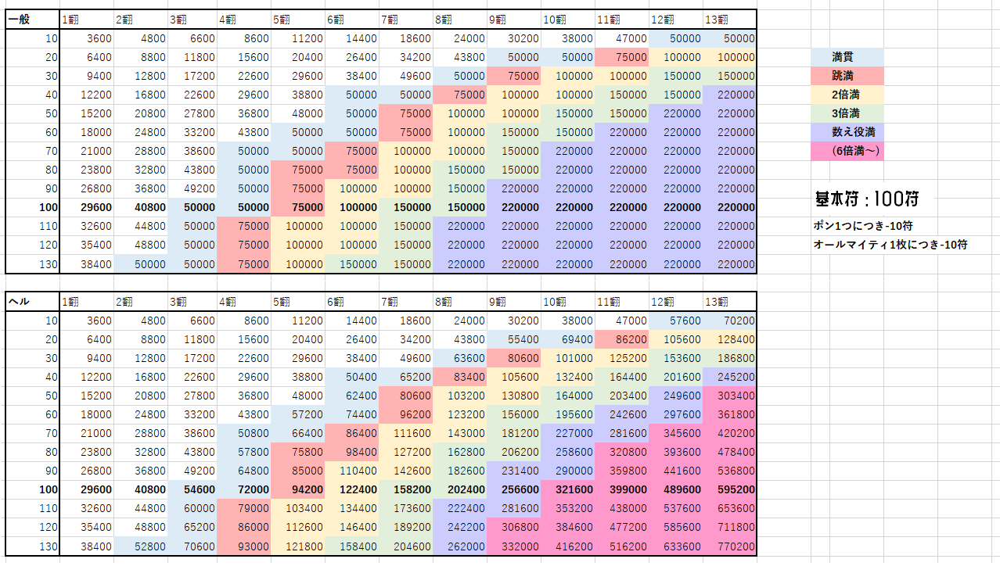

【エルドン/for this game】
はじめに
エルソードに登場するキャラクターがパイになったドンジャラ風のボードゲームです。
マルチモードではおともだちと最大4人で遊べます。
PC推奨ですがスマートフォン端末でも遊べるようになりました。
自動的にロードを行います。
BGM,SEが鳴ります。
ローカルストレージに自動セーブ機能付き。バックアップ用にデータを出力できます。
概要
9枚のパイを使って、役（特定のパイの組み合わせ）を揃えるゲームです。
①3ペア：同じキャラ（エルス、アイシャなど）を3枚1組として、3組（3キャラ）を揃える。
②ライン通貫：職ライン（1,2,3,4）が同じパイを9枚揃える。
③特殊な役：国士無双/クレストシリーズ等の特殊な役もあります。
【操作/how to play】
基本的にマウス操作です。ゲーム内プレイガイドもどうぞ。
対局中の操作（基本）
「パイを切る」 手札のパイをクリック。
「リーチ/ポン/カン/スキル」 各種ボタンをクリック。
「ツモ/ロン」 ツモ・ロンボタンをクリック。
対局中の操作（応用）
「マナブレイク」 MPゲージが1目盛以上緑色になるまで長押ししてパイを切ると、
相手からパイが見えず、ポンやロンされないマナブレイクが発動します。
「SORT」 手札のパイをキャラ順⇔職ライン順で並べ替えます。
「残パイリスト」 クリックするとまだ場に出ていないパイを表示します。
「シナジー」 クリックするとシナジー役一覧/所持パイで可能なシナジー役を表示します。
「ツモ切り」
手札のパイ以外の場所を右クリック。（設定からオフにできます）
その他の操作
「プロフィール変更」 虫眼鏡をクリックした先の画面で変更可能。ユーザー名は半角12文字以内。
「設定→セーブデータ出力」 プレイデータをjson形式でダウンロードします。
「ロード」 画面外下部「ファイルを選択」ボタンからjsonファイルをアップロード。
【対戦モードマニュアル】
対戦モードの説明です。
▼ クリックで展開 ▼
ルーム画面
ルーム長
☆がついている人。そのルームのホストです。いちばん最初に部屋を立てた人です。ルーム長が退室した場合、ルーム内の他の誰かがルーム長になります。
ルーム設定
持ち点や対局の長さなどのルール設定です。ルーム長のみ設定を変更できます。
対局開始（ホスト）、READYボタン（非ホスト）
ホスト：ルーム内のすべてのプレイヤーがREADY状態の場合に先に進めます。
非ホスト：READYボタンを押すとREADY状態となります。READY状態では退室ができません。
CPU
ルーム内のプレイヤー人数が4人未満の場合、ランダムにCPUキャラが参加します。
CPUの対局設定は、ルーム長のデータのオプション設定が反映されます。
【得点表】
細かすぎて伝わらない得点表です。満貫が75,000点、数え役満が330,000点くらいです。

【出典/Credit】
・原作 ELSWORD
※キャラクター「名無しさん」のみ全く関係ありません。
・画像 メッセージウインドウは「空想曲線」様の素材をお借りしました。
・音楽 一部の音楽は「フリーBGM DOVA-SYNDROME」からお借りしました。
・効果音 「効果音ラボ」「Pocket sound」ほか
・テストプレイ協力 インターネット老人会のみなさま
【更新情報/Update】
・fc2体験版公開(2022/08/12)
・season1 v0.95 (2023/12/31)
・season2 v1.00 (2025/02/02)
【不具合・バグ情報/Patch Notes】
＜発生中・検証中＞
・（対局の不具合）カンしたあと、3ペア役が表示されないことがある（検証中）
・（対局の不具合）手札に同じキャラのパイが5枚あるときにカンできないことがある（検証中）
・（対局の不具合）ポンもカンもできる状況の時、ポンできない（検証中）
・（バグ）魔界血戦終了後、メニュー画面で進行不能になる（検証中）
・（対戦）対戦で終局後、勝手に退室させられる場合がある（検証中）
・（対戦）特定の状況でルーム内に自分が2人存在する場合がある（検証中）
＜解決済み＞
v1.00
・（追加）season2に移行- 4ライン追加、キャラ追加、カン追加
・（対戦）特定のタイミングで対局が止まる問題を修正（たぶん）
・（修正）スマートフォン端末でも操作できるように修正、若干レスポンシブ対応